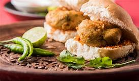
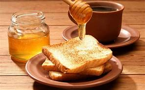
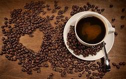

Breakfast!!!
Needless to say, breakfast is undoubtedly the most important meal of our entire day. Some people have this misconception that skipping breakfast will help them in losing weight. As a result, they skip the most important meal of their day and then indulge in binge eating later in the day when they feel extremely hungry. However, the truth is that not having proper and healthy breakfast can backfire in the longer run and cause adverse effects on our body and mind.
 |
Khaman-DhoklaKhaman dhokla is also one of the most favorite food and loved by more people.We are keeping our restaurant more clean and always uses good quality ingredients. We provide the food by taking care of all the hygines and cleanliness required. Have a visit to our restaurant. we know that you will love the food and place. |
Masala DosaDosa a south indian breakfast is also loved by many people.We are keeping our restaurant more clean and always uses good quality ingredients. We provide the food by taking care of all the hygines and cleanliness required. Have a visit to our restaurant. we know that you will love the food and place. |
 |
|  | Vada PavThis is one of the most favorite food and loved by more people.We are keeping our restaurant more clean and always uses good quality ingredients. We provide the food by taking care of all the hygines and cleanliness required. Have a visit to our restaurant. we know that you will love the food and place. |
SamosaSamosa is agian most favorite food and loved by more people.We are keeping our restaurant more clean and always uses good quality ingredients. We provide the food by taking care of all the hygines and cleanliness required. Have a visit to our restaurant. we know that you will love the food and place. |
|
|  | Bread-SandwitchesThis is also one of the most favorite food and loved by more people.We are keeping our restaurant more clean and always uses good quality ingredients. We provide the food by taking care of all the hygines and cleanliness required. Have a visit to our restaurant. we know that you will love the food and place. |
Coffee-TeaCoffee Tea and many more mocktails are provided by our restaurant.We are keeping our restaurant more clean and always uses good quality ingredients. We provide the food by taking care of all the hygines and cleanliness required. Have a visit to our restaurant. we know that you will love the food and place. |
 |